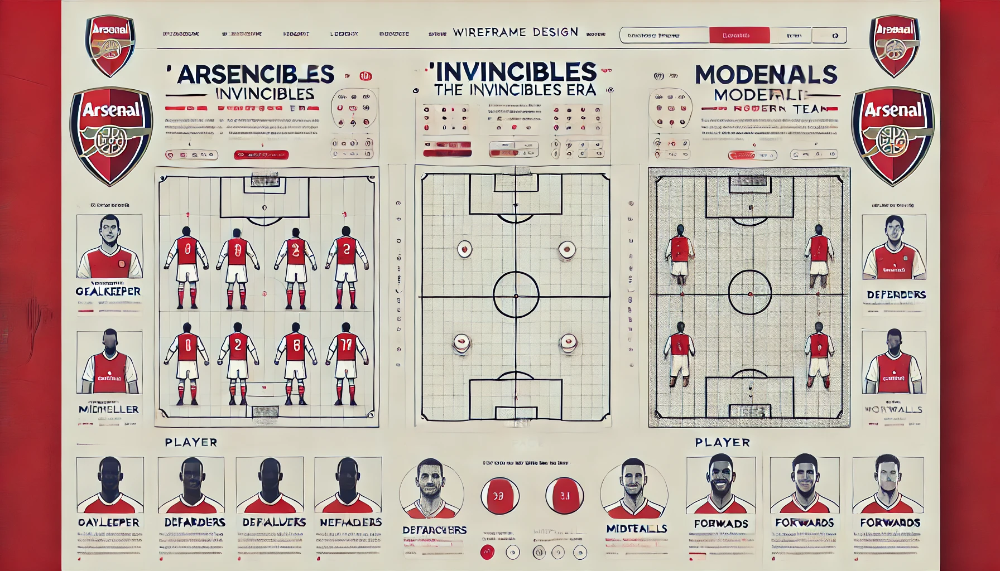

Page 2
The Arsenal Invincibles of 2003/04 represent an unparalleled achievement in football history, completing an entire Premier League season unbeaten—a feat yet to be replicated. This subpage is a tribute to that legendary squad, highlighting the players who defined an era with their skill, teamwork, and resilience. From the commanding presence of the defense to the creativity in midfield and the clinical finishing upfront, the Invincibles set the gold standard for excellence. Dive into this page to relive the magic of Arsenal's greatest team and celebrate the legacy of the players who made it possible.
